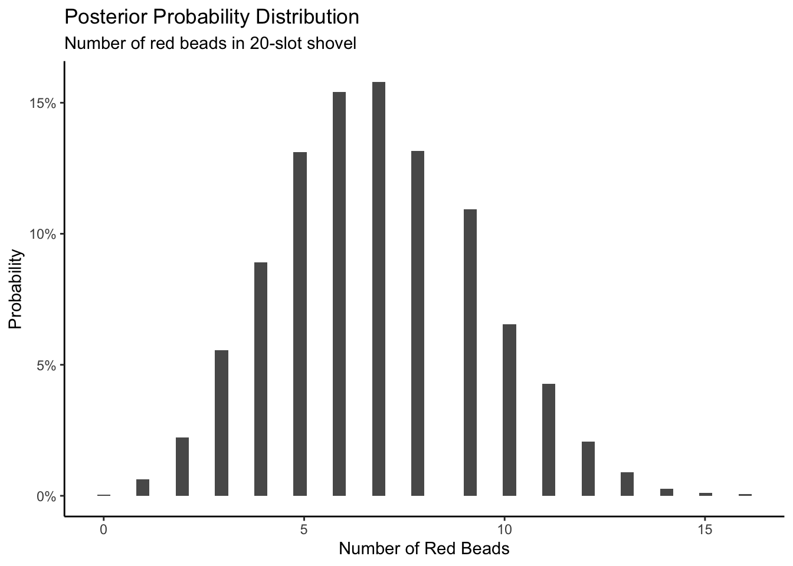
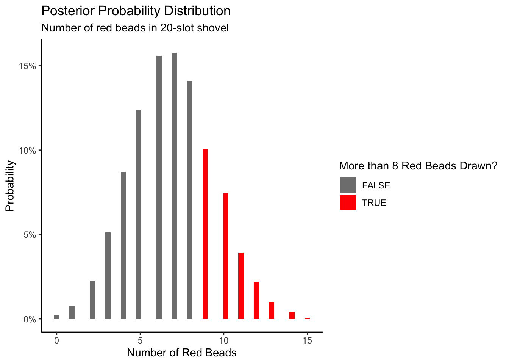

3 One Parameter
The Hunger Games is a dystopian novel in which children are chosen via lottery to fight to the death. Primrose Everdeen is selected from the urn. Why does she have the misfortune of being selected? Or, as we data scientists say, sampled?
In Chapter 2, we learned about probability, the framework for quantifying uncertainty. In this chapter, we will learn about sampling, the beginning of our journey toward inference. When we sample, we take some units from a population. With the data collected via sampling, we will create statistical models with just one unknown parameter. With such models, we can make inferences in order to answer questions.
We always use the Cardinal Virtues. Wisdom helps us to clarify the questions with which we begin. We build the Preceptor Table which, if no data were missing, would allow us to answer the question. We check for validity. Justice creates the Population Table and examines the assumptions of stability, representativeness, and unconfoundedness. With Courage, we estimate a data generating mechanism. Temperance helps us to use that DGM to answer the question with which we began.
3.1 Real sampling activity
The urn below has a certain number of red and a certain number of white beads all of equal size, mixed well together. What proportion, \(\rho\), of this urn’s beads are red?
One way to answer this question would be to perform an exhaustive count: remove each bead individually, count the number of red beads, count the number of white beads, and divide the number of red beads by the total number of beads. Call that ratio \(\rho\), the proportion of red beads in the urn. However, this would be a long and tedious process. Therefore, we will use sampling! Consider two questions:
If we get 17 red beads in a random sample of size 50 taken from a mixed urn, what proportion \(\rho\) of the beads in the urn are red?
What is the probability, using that same urn, that we will draw more than 8 red beads if we use a shovel of size 20?
To begin this chapter, we will look at a real sampling activity: the urn. Then, we will simulate the urn example using R code. This will help us to understand the standard error and the ways in which uncertainty factors into our predictions. We then attempt to estimate a single parameter, the proportion of red beads in the urn.
Use the tidyverse package.
3.1.1 Using the shovel method once
Instead of performing an exhaustive count, let’s insert a shovel into the urn and remove \(5 \cdot 10 = 50\) beads. We are taking a sample of the total population of beads.


Observe that 17 of the 50 sampled beads are red and thus \(17/50 = 0.34 = 34\%\) of the shovel’s beads are red. We can view the proportion of beads that are red in this shovel as a guess of the proportion of beads that are red in the entire urn. While not as exact as doing an exhaustive count of all the beads in the urn, our guess of 34% took much less time and energy to make.
Recall that \(\rho\) is the true value of the proportion of red beads. There is only one \(\rho\). Our guesses at the proportion of red beads are known as \(\hat{\rho}\) (pronounced p hat), where \(\hat{\rho}\) is the estimated value of \(\rho\). There are many ways to estimate \(\rho\), each leading to a (potentially) different \(\hat{\rho}\). The 34% value for \(\hat{\rho}\) came from taking this sample. But, if we used the shovel again, we would probably come up with a different \(\hat{\rho}\). There are many possible \(\hat{\rho}\)’s. You and I will often differ in our estimates. We each have a different \(\hat{\rho}\) even though we agree that there is only one \(\rho\).
Start this activity over again from the beginning, placing the 50 beads back into the urn. Would a second sample include exactly 17 red beads? Maybe, but probably not.
What if we repeated this activity many times? Would our guess at the proportion of the urn’s beads that are red, \(\hat{\rho}\), be exactly 34% every time? Surely not.
Let’s repeat this exercise with the help of 33 groups of friends to understand how the value of \(\hat{\rho}\) varies across 33 independent trials.
3.1.2 Using the shovel 33 times
Each of our 33 groups of friends will do the following:
- Use the shovel to remove 50 beads each.
- Count the number of red beads and compute the proportion of the 50 beads that are red.
- Return the beads into the urn.
- Mix the contents of the urn to not let a previous group’s results influence the next group’s.
Each of our 33 groups of friends make note of their proportion of red beads from their sample collected. Each group then marks their proportion of their 50 beads that were red in the appropriate bin in a hand-drawn histogram as seen below.

Histograms allow us to visualize the distribution of a numerical variable. In particular, where the center of the values falls and how the values vary. A partially completed histogram of the first 10 out of 33 groups of friends’ results can be seen in the figure below.

Observe the following details in the histogram:
- At the low end, one group removed 50 beads from the urn with proportion red between 0.20 and 0.25.
- At the high end, another group removed 50 beads from the urn with proportion between 0.45 and 0.5 red.
- However, the most frequently occurring proportions were between 0.30 and 0.35 red, right in the middle of the distribution.
- The distribution is somewhat bell-shaped.
tactile_sample_urn saves the results from our 33 groups of friends.
# A tibble: 33 × 4
group red_beads prop_red group_ID
<chr> <dbl> <dbl> <int>
1 Mak, Sophie 17 0.34 1
2 Siobhan, Jane 11 0.22 2
3 Ace, Chris 18 0.36 3
4 Maeve, Josh 18 0.36 4
5 Ilyas, Yohan 21 0.42 5
6 Mia, James 15 0.3 6
7 Mark, Ramses 21 0.42 7
8 Ishan, Cass 15 0.3 8
9 Aayush, Karen 15 0.3 9
10 Nam, Joshua 19 0.38 10
# ℹ 23 more rowsFor each group, we are given their names, the number of red_beads they obtained, and the corresponding proportion out of 50 beads that were red, called prop_red. We also have an group_ID variable which gives each of the 33 groups a unique identifier. Each row can be viewed as one instance of a replicated activity: using the shovel to remove 50 beads and computing the proportion of those beads that are red.
Let’s visualize the distribution of these 33 proportions using geom_histogram() with binwidth = 0.05. This is a computerized and complete version of the partially completed hand-drawn histogram you saw earlier.
Show the code
tactile_sample_urn |>
ggplot(aes(x = prop_red)) +
# Setting `boundary = 0.4` indicates that we want a binning scheme such that
# one of the bins' boundary is at 0.4. `color = "white"` modifies the color of
# the boundary for visual clarity.
geom_histogram(binwidth = 0.05,
boundary = 0.4,
color = "white") +
# Add scale_y_continuous with breaks by 1, as the default shows the y-axis
# from 1 to 10 with breaks at .5. Breaks by 1 is better for this plot, as all
# resulting values are integers.
scale_y_continuous(breaks = seq(from = 0, to = 10, by = 1)) +
# The call expression() is used to insert a mathematical expression, like
# p-hat. The paste after expression allows us to paste text prior to said
# expression.
labs(x = expression(paste("Proportion, ", hat(rho), ", of 50 beads that were red")),
y = "Count",
title = "Proportions Red in 33 Samples") 
3.1.3 What did we just do?
What we just demonstrated in this activity is the statistical concept of sampling. We want to know the proportion of red beads in the urn, with the urn being our population. Performing an exhaustive count of the red and white beads would be too time-consuming. Therefore, it is much more practical to extract a sample of 50 beads using the shovel. Using this sample of 50 beads, we estimated the proportion of the urn’s beads that are red to be about 34%.
Moreover, because we mixed the beads before each use of the shovel, the samples were random and independent. Because each sample was drawn at random, the samples were different from each other. This is an example of sampling variation. For example, what if instead of selecting 17 beads in our first sample we had selected just 11? Does that mean that the population proportion of the beads is 11/50 or 22%? No! Because we performed 33 trials we can look to our histogram, and see that the peak of the distribution occurs when \(.35 < \hat{\rho} < .4\) , so it is likely that the proportion of red beads in the entire population will also fall in or near this range.
3.2 Virtual sampling
We just performed a tactile sampling activity. We used a physical urn of beads and a physical shovel. We did this by hand so that we could develop our intuition about the ideas behind sampling. In this section, we mimic this physical sampling with virtual sampling, using a computer.
3.2.1 Using the virtual shovel once
Virtual sampling requires a virtual urn and a virtual shovel. Create a tibble named urn. The rows of urn correspond exactly to the contents of the actual urn.
Show the code
# set.seed() ensures that the beads in our virtual urn are always in the same
# order. This ensures that the figures in the book match their written
# descriptions. We want 40% of the beads to be red.
set.seed(10)
urn <- tibble(color = c(rep("red", 400),
rep("white", 600))) |>
# sample_frac() keeps all the rows in the tibble but rearranges their order.
# We don't need to do this. A virtual urn does not care about the order of the
# beads. But we find it aesthetically pleasing to mix them up.
sample_frac() |>
mutate(bead_ID = 1:1000)
urn # A tibble: 1,000 × 2
color bead_ID
<chr> <int>
1 white 1
2 white 2
3 red 3
4 red 4
5 white 5
6 white 6
7 white 7
8 white 8
9 white 9
10 white 10
# ℹ 990 more rowsObserve that urn has 1,000 rows, meaning that the urn contains 1,000 beads. The first variable bead_ID is used as an identification variable. None of the beads in the actual urn are marked with numbers. The second variable color indicates whether a particular virtual bead is red or white.
Note that in this section, we used the variable bead_ID to keep track of each bead in our urn, while in the last section we used group_ID to keep track of the samples drawn by the 33 individual teams. This is a better strategy than naming both variables ID, as it would be much more likely for us to get them confused later on.
Our virtual urn needs a virtual shovel. We use slice_sample() and some list-column mapping wizardry learned in Section 2.3 to take a sample of 50 beads from our virtual urn.
Show the code
# Define trial_ID as one instance of us sampling 50 beads from the urn. When
# trial_ID is called within map(), we are performing slice_sample() upon our urn
# once, and taking a sample of 50 beads.
tibble(trial_ID = 1) |>
mutate(shovel = map(trial_ID, ~ slice_sample(urn, n = 50)))# A tibble: 1 × 2
trial_ID shovel
<dbl> <list>
1 1 <tibble [50 × 2]>As usual, map functions and list-columns are powerful but confusing. The str() function is a good way to explore a tibble with a list-column.
Show the code
tibble(trial_ID = 1) |>
mutate(shovel = map(trial_ID, ~ slice_sample(urn, n = 50))) |>
str()tibble [1 × 2] (S3: tbl_df/tbl/data.frame)
$ trial_ID: num 1
$ shovel :List of 1
..$ : tibble [50 × 2] (S3: tbl_df/tbl/data.frame)
.. ..$ color : chr [1:50] "white" "white" "white" "red" ...
.. ..$ bead_ID: int [1:50] 812 903 227 283 229 160 523 893 66 277 ...There are two levels. There is one row in the tibble for each sample. So far, we have only drawn one sample. Within each row, there is a second level, the tibble which is the sample. That tibble has two variables: trial_ID and color. This is the advantage to using slice_sample(), because it selects all columns of our urn, whereas sample() can only sample from a single column. While identifying each individual bead may be irrelevant in our urn scenario, with other problems it could be very useful to have additional data about each individual.
Now let’s add a column which indicates the number of red beads in the sample taken from the shovel.
Show the code
tibble(trial_ID = 1) |>
mutate(shovel = map(trial_ID, ~ slice_sample(urn, n = 50))) |>
# To count the number of red beads in each shovel, we can use a lesser
# known property of the sum() function: By passing in a comparison
# expression, sum() will count the number of occurrences within a vector.
# In this case, we count the total number occurrences of the word red
# in the color column of shovel.
mutate(numb_red = map_int(shovel, ~ sum(.$color == "red")))# A tibble: 1 × 3
trial_ID shovel numb_red
<dbl> <list> <int>
1 1 <tibble [50 × 2]> 20How does this work? R evaluates if color == red, and treats TRUE values like the number 1 and FALSE values like the number 0. So summing the number of TRUEs and FALSEs is equivalent to summing 1’s and 0’s. In the end, this operation counts the number of beads where color equals “red”.
Finally, calculate the proportion red by dividing numb_red (The number of red beads observed in the shovel), by the shovel size (We are using a shovel of size 50).
Show the code
# A tibble: 1 × 4
trial_ID shovel numb_red prop_red
<dbl> <list> <int> <dbl>
1 1 <tibble [50 × 2]> 23 0.46Careful readers will note that the numb_red is changing in each example above. The reason, of course, is that each block re-runs the shovel exercise, and slice_sample will return a random number of red beads. If we wanted the same number in each block, we would need to use set.seed() each time, always providing the same seed each time.
Let’s now perform the virtual analog of having 33 groups of students use the sampling shovel!
3.2.2 Using the virtual shovel 33 times
In our tactile sampling exercise in Section 3.1, we had 33 groups of students use the shovel, yielding 33 samples of size 50 beads. We then used these 33 samples to compute 33 proportions.
Let’s use our virtual sampling to replicate the tactile sampling activity in a virtual format. We’ll save these results in a data frame called virtual_samples.
Show the code
# A tibble: 33 × 4
trial_ID shovel numb_red prop_red
<int> <list> <int> <dbl>
1 1 <tibble [50 × 2]> 21 0.42
2 2 <tibble [50 × 2]> 19 0.38
3 3 <tibble [50 × 2]> 17 0.34
4 4 <tibble [50 × 2]> 15 0.3
5 5 <tibble [50 × 2]> 17 0.34
6 6 <tibble [50 × 2]> 21 0.42
7 7 <tibble [50 × 2]> 9 0.18
8 8 <tibble [50 × 2]> 21 0.42
9 9 <tibble [50 × 2]> 16 0.32
10 10 <tibble [50 × 2]> 20 0.4
# ℹ 23 more rowsLet’s visualize this variation in a histogram:
Show the code
virtual_samples |>
ggplot(aes(x = prop_red)) +
geom_histogram(binwidth = 0.05,
boundary = 0.4,
color = "white") +
# To use mathematical symbols in titles and labels, use the expression()
# function, as here.
labs(x = expression(paste("Proportion, ", hat(rho), ", of 50 beads that were red")),
y = "Count",
title = "Distribution of 33 proportions red") +
# Label the y-axis in an attractive fashion. Without this code, the axis
# labels would include 2.5, which makes no sense because all the values are
# integers.
scale_y_continuous(breaks = seq(2, 10, 2))
Since binwidth = 0.05, this will create bins with boundaries at 0.30, 0.35, 0.45, and so on. Recall that \(\hat{\rho}\) is equal to the proportion of beads which are red in each sample.
Observe that we occasionally obtained proportions red that are less than 30%. On the other hand, we occasionally obtained proportions that are greater than 45%. However, the most frequently occurring proportions were between 35% and 45%. Why do we have these differences in proportions red? Because of sampling variation.
Now we will compare our virtual results with our tactile results from the previous section. Observe that both histograms are somewhat similar in their center and variation, although not identical. These slight differences are again due to random sampling variation. Furthermore, observe that both distributions are somewhat bell-shaped.

This visualization allows us to see how our results differed between our tactile and virtual urn results. As we can see, there is some variation between our results. This is not a cause for concern, as there is always expected sampling variation between results.
3.2.3 Using the virtual shovel 1,000 times

Although we took 33 samples from the urn in the previous section, we should never do that again! The advantage of modern technology is that we can use virtual simulation as many times as we choose, so we have no restrictions on resources. No longer are the days where we have to recruit our friends to tirelessly sample from the physical urn. We are now data scientists! 33 samples are useless to us. Instead, we use our simulations hundreds or thousands of times to create mathematical models that we can combine with our knowledge to answer our questions. In this section we’ll examine the effects of sampling from the urn 1,000 times.
We can reuse our code from above, making sure to replace 33 trials with 1,000.
Now we have 1,000 values for prop_red, each representing the proportion of 50 beads that are red in a sample. Using the same code as earlier, let’s visualize the distribution of these 1,000 replicates of prop_red in a histogram:
Show the code
virtual_samples |>
ggplot(aes(x = prop_red)) +
geom_histogram(binwidth = 0.01,
boundary = 0.4,
color = "white") +
labs(x = expression(hat(rho)),
y = "Count",
title = "Distribution of 1,000 proportions red") 
Why the empty spaces among the bars? Recall that, with only 50 beads, there are only 51 possible values for \(\hat{\rho}\): 0, 0.02, 0.04, …, 0.98, 1. A value of 0.31 or 0.47 is impossible, hence the gaps.
The most frequently occurring proportions of red beads occur, again, between 35% and 45%. Every now and then we observe proportions much higher or lower. This occurs because as we increase the number of trials, tails develop on our distribution as we are more likely to witness extreme \(\hat{\rho}\) values. The symmetric, bell-shaped distribution shown in the histogram is well approximated by the normal distribution.
Now that we have a good understanding of virtual sampling, we can apply our knowledge to examine the effects of changing our virtual shovel size.
3.2.4 The effect of different shovel sizes

Instead of just one shovel, imagine we have three choices of shovels to extract a sample of beads with: shovels of size 25, 50, and 100. Using our newly developed tools for virtual sampling, let’s unpack the effect of having different sample sizes. Start by creating a tibble with 1,000 rows, each row representing an instance of us sampling from the urn with our chosen shovel size. Then, compute the resulting 1,000 replicates of proportion red. Finally, plot the distribution using a histogram.
Show the code
# Within slice_sample(), n = 25 represents our shovel of size 25. We also divide
# by 25 to compute the proportion red.
virtual_samples_25 <- tibble(trial_ID = 1:1000) |>
mutate(shovel = map(trial_ID, ~ slice_sample(urn, n = 25))) |>
mutate(numb_red = map_int(shovel, ~ sum(.$color == "red"))) |>
mutate(prop_red = numb_red / 25)
virtual_samples_25 |>
ggplot(aes(x = prop_red)) +
geom_histogram(binwidth = 0.04,
boundary = 0.4,
color = "white") +
labs(x = expression(paste("Proportion, ", hat(rho), ", of 25 beads that were red")),
title = "25") 
We will repeat this process with a shovel size of 50.
Show the code
virtual_samples_50 <- tibble(trial_ID = 1:1000) |>
mutate(shovel = map(trial_ID, ~ slice_sample(urn, n = 50))) |>
mutate(numb_red = map_int(shovel, ~ sum(.$color == "red"))) |>
mutate(prop_red = numb_red / 50)
virtual_samples_50 |>
ggplot(aes(x = prop_red)) +
geom_histogram(binwidth = 0.04,
boundary = 0.4,
color = "white") +
labs(x = expression(paste("Proportion, ", hat(rho), ", of 50 beads that were red")),
title = "50") 
We choose a bin width of .04 for all histograms to more easily compare different shovel sizes. Using a smaller bin size would result in gaps between the bars, as a shovel of size 50 has more possible \(\hat{\rho}\) values than a shovel of size 25.
Finally, we will perform the same process with 1000 replicates to map the histogram using a shovel size of 100.
Show the code
virtual_samples_100 <- tibble(trial_ID = 1:1000) |>
mutate(shovel = map(trial_ID, ~ slice_sample(urn, n = 100))) |>
mutate(numb_red = map_int(shovel, ~ sum(.$color == "red"))) |>
mutate(prop_red = numb_red / 100)
virtual_samples_100 |>
ggplot(aes(x = prop_red)) +
geom_histogram(binwidth = 0.04,
boundary = 0.4,
color = "white") +
labs(x = expression(paste("Proportion, ", hat(rho), ", of 100 beads that were red")),
title = "100") 
For easy comparison, we present the three resulting histograms in a single row with matching x and y axes:
Show the code
# Use bind_rows to combine the data from our three saved virtual sampling
# objects. Use mutate() in each to clarify the n as the necessary number
# of samples taken. This makes our data easier to interpret and prevents
# duplicate elements.
virtual_prop <- bind_rows(virtual_samples_25 |>
mutate(n = 25),
virtual_samples_50 |>
mutate(n = 50),
virtual_samples_100 |>
mutate(n = 100))
# Plot our new object with the x-axis showing prop_red. Add elements binwidth,
# boundary, and color for stylistic clarity. Use labs() to add an x-axis label
# and title. Facet_wrap() splits the graph into multiple plots by the variable
# (~n).
comparing_sampling_distributions <- ggplot(virtual_prop, aes(x = prop_red)) +
geom_histogram(binwidth = 0.04, boundary = 0.4, color = "white") +
labs(x = expression(paste("Proportion, ", hat(rho), ", of the beads that were red")),
title = "Comparing distributions of proportions red for three different shovel sizes.") +
facet_wrap(~ n)
# Inspect our new faceted graph.
comparing_sampling_distributions
Observe that as the sample size increases, the histogram becomes taller and narrower. This is because the variation of the proportion red for each sample decreases. Remember: A large variation means there are a wide range of values that can be achieved, while smaller variations are concentrated around a specific value.
The Central Limit Theorem states, more or less, that when sample means are based on larger and larger sample sizes, the sampling distribution of these sample means becomes both narrower and more bell-shaped. In other words, the sampling distribution increasingly follows a normal distribution and the variation of this sampling distribution gets smaller, meaning smaller standard errors.
Why does variation decrease as sample size increases? If we use a large sample size like 100 or 500, our sample is much more representative of the population simply because more of the population is included. As a result, the proportion red in our sample (\(\hat{\rho}\)) will be closer to the population proportion (\(\rho\)). On the other hand, smaller samples have much more variation because of our old friend chance. We are much more likely to have extreme samples that are not representative of our population.
Let’s attempt to visualize the concept of variation a different way. For each sample size, let’s plot the proportion red for all 1,000 samples. With 3 different shovel sizes, we will have 3,000 total points, with each point representing an instance of sampling from the urn with a specific shovel size.
Show the code
virtual_prop |>
ggplot(aes(x = n, y = prop_red, color = as.factor(n))) +
geom_jitter(alpha = .15) +
labs(title = "Results of 1,000 samples for 3 different shovel sizes.",
subtitle = "As shovel size increases, variation decreases.",
y = "Proportion red in sample",
color = "Shovel size") +
# We do not need an x axis, because the color of the points denotes the shovel size.
theme(axis.title.x = element_blank(),
axis.text.x = element_blank(),
axis.ticks.x = element_blank())
This graph illustrates the exact same concept as the histogram. With the smallest shovel size there is significant variance from sample to sample, as samples take on a wide variety of sample proportions! However, as we increase the sample size, the points become more concentrated, or less variance.
There is also a third way to understand variation! We can be numerically explicit about the amount of variation in our three sets of 1,000 values of prop_red by using the standard deviation. A standard deviation is a summary statistic that measures the amount of variation within a numerical variable. For all three sample sizes, let’s compute the standard deviation of the 1,000 proportions red.
| Comparing standard deviations of proportions red for three different shovels | |
|---|---|
| Number of slots in shovel | Standard deviation of proportions red |
| 25 | 0.099 |
| 50 | 0.067 |
| 100 | 0.045 |
Comparing the number of slots in the shovel with the standard deviation of proportions red. Here, we see that standard deviation decreases with higher sample sizes. Larger sample sizes yield more precise estimates.
As the sample size increases, the sample to sample variation decreases, and our guesses at the true proportion of the urn’s beads that are red get more precise. The larger the shovel, the more precise the result.

Let’s take a step back from all the variance. The reality is that our code needs to be better optimized, as it is bad practice to make a separate tibble for each sample size. To make comparisons easier, let’s attempt to put all 3 shovel sizes in the same tibble using mapping.
Show the code
# A tibble: 3,000 × 5
trial_ID shovel_ID samples num_red prop_red
<int> <dbl> <list> <int> <dbl>
1 1 25 <tibble [25 × 2]> 7 0.28
2 1 50 <tibble [50 × 2]> 26 0.52
3 1 100 <tibble [100 × 2]> 37 0.37
4 2 25 <tibble [25 × 2]> 8 0.32
5 2 50 <tibble [50 × 2]> 15 0.3
6 2 100 <tibble [100 × 2]> 46 0.46
7 3 25 <tibble [25 × 2]> 6 0.24
8 3 50 <tibble [50 × 2]> 21 0.42
9 3 100 <tibble [100 × 2]> 40 0.4
10 4 25 <tibble [25 × 2]> 9 0.36
# ℹ 2,990 more rowsTo those of us who do not completely understand mapping, do not fret! The tidyr package provides the expand_grid() function as a neat alternative. We can use expand_grid() and a new variable, shovel_size, to create a tibble which will organize our results. Instead of using 1,000 trials, let’s use 3 to get a feel for the function.
Show the code
expand_grid(trial_ID = c(1:3), shovel_size = c(25, 50, 100))# A tibble: 9 × 2
trial_ID shovel_size
<int> <dbl>
1 1 25
2 1 50
3 1 100
4 2 25
5 2 50
6 2 100
7 3 25
8 3 50
9 3 100The above sets the stage for simulating three samples for each of three different shovel sizes. Similar code as above can be used.
Show the code
expand_grid(trial_ID = c(1:3), shovel_size = c(25, 50, 100)) |>
mutate(shovel = map(shovel_size, ~ slice_sample(urn, n = .))) |>
mutate(numb_red = map_int(shovel, ~ sum(.$color == "red"))) |>
mutate(prop_red = numb_red/shovel_size) # A tibble: 9 × 5
trial_ID shovel_size shovel numb_red prop_red
<int> <dbl> <list> <int> <dbl>
1 1 25 <tibble [25 × 2]> 7 0.28
2 1 50 <tibble [50 × 2]> 19 0.38
3 1 100 <tibble [100 × 2]> 39 0.39
4 2 25 <tibble [25 × 2]> 8 0.32
5 2 50 <tibble [50 × 2]> 19 0.38
6 2 100 <tibble [100 × 2]> 34 0.34
7 3 25 <tibble [25 × 2]> 7 0.28
8 3 50 <tibble [50 × 2]> 19 0.38
9 3 100 <tibble [100 × 2]> 36 0.36Again, we changed the second line to use shovel_size rather than trial_ID as the mapping variable since we can no longer hard code the shovel size into the call to slice_sample(). Expand to 1,000 simulations for each value of shovel_size and finish with a calculation of standard deviation.
Show the code
# A tibble: 3 × 2
shovel_size st_dev_p_hat
<dbl> <dbl>
1 25 0.0967
2 50 0.0682
3 100 0.0453This is, approximately, the same result as we saw above, but with 1 re-factored tibble instead of 3 separate ones. We can also use functions like expand_grid() in the future to make our code more concise.
Now that we have this framework, there’s no need to limit ourselves to the sizes 25, 50, and 100. Why not try all integers from 1 to 100? We can use the same code, except we’ll now set shovel_size = 1:100.
Show the code
shovels_100 <- expand_grid(trial_ID = c(1:1000), shovel_size = c(1:100)) |>
mutate(shovel = map(shovel_size, ~ slice_sample(urn, n = .))) |>
mutate(numb_red = map_int(shovel, ~ sum(.$color == "red"))) |>
mutate(prop_red = numb_red / shovel_size) |>
summarize(st_dev_p_hat = sd(prop_red),
.by = shovel_size)
glimpse(shovels_100)Rows: 100
Columns: 2
$ shovel_size <int> 1, 2, 3, 4, 5, 6, 7, 8, 9, 10, 11, 12, 13, 14, 15, 16, 17…
$ st_dev_p_hat <dbl> 0.48436516, 0.34093399, 0.27629253, 0.24069833, 0.2140195…Now, we have the standard deviation of prop_red for all shovel sizes from 1 to 100. Let’s plot that value to see how it changes as the shovel gets larger:

The red line here represents an important statistical concept: standard error (SE). As the shovel size increases, and thus our sample size increases, we find that the standard error decreases. If this is confusing right now, fear not! We will delve into the explanation of standard error in our next section.

This is the power of running many analyses at once using map functions and list columns: before, we could tell that the standard deviation was decreasing as the shovel size increased, but when only looking at shovel sizes of 25, 50, and 100, it wasn’t clear how quickly it was decreasing.
3.3 Standard error

Standard errors (SE) quantify the effect of sampling variation on our estimates. In other words, they quantify how much we can expect the calculated proportions of a shovel’s beads that are red to vary from one sample to another sample to another sample, and so on. As a general rule, as sample size increases, the standard error decreases.
The standard error is the standard deviation of a sample statistic (aka point estimate), such as the proportion. For example, the standard error of the mean refers to the standard deviation of the distribution of sample means taken from a population.
The relationship between the standard error and the standard deviation is that, for a given sample size, the standard error equals the standard deviation divided by the square root of the sample size. Accordingly, the standard error is inversely proportional to the square root of the sample size. The larger the sample size, the smaller the standard error.
If this sounds confusing, don’t worry! It is. Before we can explain this in more depth, it is important to understand some terminology.
3.3.1 Terminology and notation

All of the concepts underlying this terminology, notation, and definitions tie directly to the concepts underlying our tactile and virtual sampling activities. It will simply take time and practice to master them.
First, a population is the set of relevant units. The population’s size is upper-case \(N\). In our sampling activities, the population is the collection of \(N\) = 1,000 identically sized red and white beads in the urn. This is about the simplest possible population. Other examples are all the adult men in the US, all the classrooms in a school, all the wheelbarrows in Massachusetts, all the values of your blood pressure, read at five minute intervals, for your entire life. Often, the population is extends over time, as with your blood pressure readings and is, therefore, more amorphous. Consider all the people who have run for governor of a US state since 1900, or all the people who will run for governor through 2050. Those are also populations.
Second, a population parameter is a numerical summary quantity about the population that is unknown, but you wish you knew. For example, when this quantity is the mean, the population parameter of interest is the population mean. This is mathematically denoted with the Greek letter \(\mu\) pronounced “mu.” In our earlier sampling from the urn activity, however, since we were interested in the proportion of the urn’s beads that were red, the population parameter is the population proportion, denoted with \(\rho\).
Third, a census is an exhaustive enumeration or counting of all \(N\) units in the population in order to compute the population parameter’s value exactly. In our sampling activity, this would correspond to counting the number of beads out of \(N = 1000\) that are red and computing the population proportion \(\rho\) that are red exactly. When the number \(N\) of individuals or observations in our population is large as was the case with our urn, a census can be quite expensive in terms of time, energy, and money. A census is impossible for any populations which includes the future, like our blood pressure next year or candidates for governor in 2040. There is a truth but we could not, even in theory, calculate it.
Fourth, sampling is the act of collecting a sample from the population when we can not, or do not want to, perform a census. The sample size is lower case \(n\), as opposed to upper case \(N\) for the population’s size. Typically the sample size \(n\) is much smaller than the population size \(N\). In our sampling activities, we used shovels with varying slots to extract samples of size \(n\) = 1 through \(n\) = 100.
Fifth, a point estimate, also known as a sample statistic, is a measure computed from a sample that estimates an unknown population parameter. In our sampling activities, recall that the unknown population parameter was the proportion of red beads and that this is mathematically denoted by \(\rho\). Our point estimate is the sample proportion: the proportion of the shovel’s beads that are red. In other words, it is our guess at the proportion of the urn’s beads that are red. The point estimate of the parameter \(\rho\) is \(\hat{\rho}\). The “hat” on top of the \(\rho\) indicates that it is an estimate of the unknown population proportion \(\rho\).
Sixth, a sample is said to be representative if it roughly looks like the population. In other words, are the sample’s characteristics a good representation of the population’s characteristics? In our sampling activity, are the samples of \(n\) beads extracted using our shovels representative of the urn’s \(N\) = 1000 beads?
Seventh, a sample is generalizable if any results based on the sample can generalize to the population. In our sampling activity, can we generalize the sample proportion from our shovels to the entire urn? Using our mathematical notation, this is akin to asking if \(\hat{\rho}\) is a “good guess” of \(\rho\)?
Eighth, biased sampling occurs if certain individuals or observations in a population have a higher chance of being included in a sample than others. We say a sampling procedure is unbiased if every observation in a population had an equal chance of being sampled. Had the red beads been much smaller than the white beads, and therefore more prone to falling out of the shovel, our sample would have been biased. In our sampling activities, since we mixed all \(N = 1000\) beads prior to each group’s sampling and since each of the equally sized beads had an equal chance of being sampled, our samples were unbiased.
Ninth, a sampling procedure is random if we sample randomly from the population in an unbiased fashion. In our sampling activities, this would correspond to sufficiently mixing the urn before each use of the shovel.

In general:
- If the sampling of a sample of size \(n\) is done at random, then
- the sample is unbiased and representative of the population of size \(N\), thus
- any result based on the sample can generalize to the population, thus
- the point estimate is a “good guess” of the unknown population parameter, thus
- instead of performing a census, we can draw inferences about the population using sampling.
Specific to our sampling activity:
- If we extract a sample of \(n=50\) beads at random, in other words, we mix all of the equally sized beads before using the shovel, then
- the contents of the shovel are an unbiased representation of the contents of the urn’s 1000 beads, thus
- any result based on the shovel’s beads can generalize to the urn, thus
- the sample proportion \(\hat{\rho}\) of the \(n=50\) beads in the shovel that are red is a “good guess” of the population proportion \(\rho\) of the \(N=1000\) beads that are red, thus
- instead of manually going over all 1,000 beads in the urn, we can make inferences about the urn by using the results from the shovel.
3.3.2 Statistical definitions
Now, for some important statistical definitions related to sampling. As a refresher of our 1,000 repeated/replicated virtual samples of size \(n\) = 25, \(n\) = 50, and \(n\) = 100 in Section 3.2, let’s display our figure showing the difference in proportions red according to different shovel sizes.

These types of distributions have a special name: sampling distributions; their visualization displays the effect of sampling variation on the distribution of a point estimate; in this case, the sample proportion \(\hat{\rho}\). Using these sampling distributions, for a given sample size \(n\), we can make statements about what values we typically expect.
For example, observe the centers of all three sampling distributions: they are all roughly centered around \(0.4 = 40\%\). Furthermore, observe that while we are somewhat likely to observe sample proportions of red beads of \(0.2 = 20\%\) when using the shovel with 25 slots, we will almost never observe a proportion of 20% when using the shovel with 100 slots. Observe also the effect of sample size on the sampling variation. As the sample size \(n\) increases from 25 to 50 to 100, the variation of the sampling distribution decreases and thus the values cluster more and more tightly around the same center of around 40%. We quantified this variation using the standard deviation of our sample proportions, seeing that the standard deviation decreases with the square root of the sample size:

So as the sample size increases, the standard deviation of the proportion of red beads decreases. This type of standard deviation has another special name: standard error
3.3.3 What is a “standard error”?
The “standard error” (SE) is a term that measures the accuracy with which a sample distribution represents a population through the use of standard deviation. Specifically, SE is used to refer to the standard deviation of a sample statistic (aka point estimate), such as the mean or median. For example, the “standard error of the mean” refers to the standard deviation of the distribution of sample means taken from a population.
In statistics, a sample mean deviates from the actual mean of a population; this deviation is the standard error of the mean.
Many students struggle to differentiate the standard error from the standard deviation. The relationship between the standard error and the standard deviation is such that, for a given sample size, the standard error equals the standard deviation divided by the square root of the sample size. Accordingly, the standard error is inversely proportional to the sample size; the larger the sample size, the smaller the standard error because the statistic will approach the actual value.
The more data points involved in the calculations of the mean, the smaller the standard error tends to be. When the standard error is small, the data is said to be more representative of the true mean. In cases where the standard error is large, the data may have some notable irregularities. Thus, larger sample size = smaller standard error = more representative of the truth.
To help reinforce these concepts, let’s re-display our previous figure but using our new sampling terminology, notation, and definitions:

Furthermore, let’s display the graph of standard errors for \(n = 1\) to \(n = 100\) using our new terminology, notation, and definitions relating to sampling.

Remember the key message of this last table: that as the sample size \(n\) goes up, the “typical” error of your point estimate will go down, as quantified by the standard error.
3.3.4 The moral of the story
If we could only know two pieces of information from our data, what would they be? First, you need a measure of the center of the distribution. This would include the mean or median, which shows the center of our data points. Second, we need a measure of the variability of the distribution. To understand our center, we must understand how different (or how spread) our data points are from one another. Thus, we need a measure like sd() or MAD. These are summary statistics which are necessary to understanding a distribution. Do those two figures encompass all you need to know about a distribution? No! But, if you are only allowed two numbers to keep, those are the most valuable.
The mean or median is a good estimate for the center of the posterior and the standard error or mad is a good estimate for the variability of the posterior, with +/- 2 standard errors covering 95% of the outcomes.
The standard error measures the accuracy of a sample distribution as compared to the population by using the standard deviation. Specifically, the standard deviation of our data points divided by the square root of the sample size. As such, we find that larger sample sizes = lower standard errors = more accurate and representative guesses.
To really drive home our point: standard error is just a fancy term for your uncertainty about something you don’t know. Standard error == our (uncertain) beliefs.

This hierarchy represents the knowledge we need to understand standard error (SE). At the bottom, we have math. It’s the foundation for our understanding, but it doesn’t need to be what we take away from this lesson. As we go up, we simplify the topic. The top of the pyramid are the basic levels of understanding that will help you to remember in the future.
If I know your estimate plus or minus two standard errors, I know your 95% confidence interval. This is valuable information. Standard error is really just a measure for how uncertain we are about something we do not know, the thing we are estimating. When we recall SE, we should remember that, all in all, it’s a complicated concept that can be distilled into: the way old people talk about confidence intervals.
Recall that \(\hat{\rho}\) is the estimated value of p which comes from taking a sample. There can be billions and billions of \(\hat{\rho}\)’s. We look at a large group of \(\hat{\rho}\)’s, create a distribution of results to represent the possible values of p based on our findings, and then we compute a standard error to account for our own uncertainty about our predictions. Our 95% confidence interval for our prediction == our estimate plus or minus two standard errors.
In regards to the fifth layer of the hierarchy, we may wonder:
“I thought that MADs were the same thing as standard deviations. Now you say they are the same things as standard errors. Which is it?”
MADs and standard deviations are, more or less, the same thing. They are both measures of the variability of a distribution. In most cases, they have very similar values. A standard error is also a standard deviation. Specifically, it is the standard deviation of the distribution of the estimates, and that distribution of estimates is, more or less, your posterior. Therefore, we can use MAD, like standard error, to describe that distribution and the variability of that distribution.
You must understand what the standard error of \(\hat{\rho}\) means. You do not need to understand why.
3.4 Cardinal Virtues
Recall the questions we asked at the beginning of this Chapter:
If we get 17 red beads in a random sample of size 50 taken from a mixed urn, what proportion \(\rho\) of the beads in the urn are red?
What is the probability, using the same urn, that we will draw more than 8 red beads if we use a shovel of size 20?
Use the Cardinal Virtues to guide your thinking.
3.4.1 Wisdom

Wisdom requires the creation of a Preceptor Table, an examination of our data, and a determination, using the concept of “validity,” as to whether or not we can (reasonably!) assume that the two come from the same population.

A Preceptor Table is a table with rows and columns, such that, if no data is missing, we can easily answer our questions.
| Preceptor Table | |
|---|---|
| ID | Color |
| 1 | white |
| 2 | white |
| ... | ... |
| 200 | red |
| 201 | white |
| ... | ... |
| 2078 | red |
| 2079 | white |
| ... | ... |
Note that the beads do not have ID numbers printed on them. The numbering is arbitrary. Having an ID just reminds us that there are actual units under consideration, even if we can not tell them apart, other than by color. We also include the ID to help visualize the fact that we don’t know the total number of beads in the urn, because our question never tells us! There could be 1,000 beads like our physical urn from earlier, or there could be a million beads. The ellipse at the bottom of the Preceptor Table denotes our uncertainty regarding urn size.
There is only one outcome column, “Color,” because this is not a causal model, for which we need to have (at least) two potential outcomes. Predictive models require only one outcome.
If we know the color of every bead, then calculating the proportion of beads which are red, \(\rho\), is simple algebra. Once we know \(\rho\) we can simulate the answers to other questions.
The data we have, unfortunately, only provides the color for 50 beads.
| Data from Shovel | |
|---|---|
| ID | Color |
| 2 | white |
| ... | ... |
| 200 | red |
| ... | ... |
| 2079 | white |
| ... | ... |
Again, there are, in truth, no ID numbers. But keeping track of which beads were in the sample and which beads were not is helpful.
The last step of Wisdom is to decide whether or not we can consider the units from the Preceptor Table and the units from the data to have been drawn from the same population. In this case, as with many sampling scenarios, it is trivial that we may make this assumption. If all the rows from the data are also rows in the Preceptor Table, we may assume that they are drawn from the same distribution.
We also consider why some beads do get sampled, while others do not. This is a consequence of the sampling mechanism. We hope that all members of the population have the same chance of being sampled, or else our data might be biased. Almost all samples have some bias, but we must make a judgement call to see if the data we have is close enough to the data we want (i.e., the Preceptor Table) that we can consider both as coming from the same population. Our sample of 50 beads is taken from a mixed urn, so hopefully there is a near equal chance of selecting each bead, and our samples are representative of the population.
Validity involves the columns of our data set. Is the meaning of our columns consistent across the different data sources? In our urn scenario, does bead color in our sampled data and bead color in our Preceptor Table mean the same thing? The answer is yes, and validity can be assumed very easily.
3.4.2 Justice

Justice examines the assumptions of stability, representativeness, and unconfoundedness with regard to the Population Table.
3.4.2.1 Population Table
We use The Population Table to acknowledge the wider source from which we could have collected our data.
It includes rows from three sources: the data for units we want to have (the Preceptor Table), the data for units which we have (our actual data), and the data for units we do not care about (the rest of the population, not included in the data or the Preceptor Table).
| Source | Location | Time | ID | Color |
|---|---|---|---|---|
… |
Known, specific urn |
Time of sample - 2 years |
1 |
? |
… |
Known, specific urn |
Time of sample - 2 years |
200 |
? |
… |
Known, specific urn |
Time of sample - 2 years |
976 |
? |
… |
… |
… |
… |
… |
Data |
Known, specific urn |
Time of sample |
2 |
white |
Data |
Known, specific urn |
Time of sample |
200 |
red |
Data |
Known, specific urn |
Time of sample |
1080 |
white |
… |
… |
… |
… |
… |
… |
Known, specific urn |
Time of sample + 3 weeks |
1 |
? |
… |
Known, specific urn |
Time of sample + 3 weeks |
200 |
? |
… |
Known, specific urn |
Time of sample + 3 weeks |
2025 |
? |
… |
… |
… |
… |
… |
Preceptor Table |
Known, specific urn |
Now |
1 |
? |
Preceptor Table |
Known, specific urn |
Now |
200 |
red |
Preceptor Table |
Known, specific urn |
Now |
2078 |
? |
… |
… |
… |
… |
… |
… |
Known, specific urn |
Now + 10 days |
1 |
? |
… |
Known, specific urn |
Now + 10 days |
200 |
? |
… |
Known, specific urn |
Now + 10 days |
2300 |
? |
Each specific row represents one subject, which are individual beads in our urn scenario. Because there could be thousands or even millions of beads, we provide 3 examples for each category, and use ellipses to denote that there are many more subjects that we have yet to record.
Each Population Table will usually have several types of columns: id, time, covariates, and outcome(s):
When we construct a Preceptor Table to answer our question, we must select some covariates that we want all of our subjects to have. Our urn scenario has no covariates, however, so we will explore this issue in later chapters.
- Because we draw our sample from the exact same urn our question asks us about, the data we collect comes directly from the Preceptor Table, all subjects in our population have the same location (“Known, specific urn”). The Preceptor Table and Population categories are essentially identical. This is the perfect scenario for us, but this rarely occurs in real life.
Population Tables always have a column for Time. When answering a question we must specify the moment in time to which it applies, because stuff happens and things change.
We must acknowledge that the sample from the urn could have been taken at any time, so the contents of the urn in the past (our data) could be different from the contents of the urn when we want to answer our question now (the Preceptor Table). As such, there is a wider population we could have collected our data from: any time before collecting the sample, or anytime after collecting it.
Finally, Population Tables have an outcome. Sometimes there will be multiple outcome columns, as in the case of casual models in which we need the values for two or more potential outcomes so that we can calculate a causal effect.
3.4.2.2 Stability and representativeness
Now that we have created our Population Table, we can analyze the key assumptions of stability, representativeness and unconfoundedness.
Stability involves time. Is the model — meaning both the mathematical formula and the value of the parameters — stable over time? Realistically, an urn will be the same today, tomorrow or next year. However, what if someone dumps some red beads into the urn after we take our sample? Then we cannot assume stability, because the proportion of red beads in the urn, \(\rho\), the instant before the dump is different than the proportion red in the urn after. We will assume no one is tampering with our urn, and assume stability across time periods.
Representativeness involves the data rows, specifically the rows for which we have data versus the rows for which we might have had data. Are the rows that we do have data for representative of the rows for which we do not have data? For the sample proportion to be similar to the actual population proportion, we ideally want the data we have to be a random, unbiased selection from our population. In the context of our problem, the sampling mechanism of using a shovel of size 50 to sample beads from an urn in which the beads are thoroughly mixed should be enough to consider our sample representative of the population.
Unconfoundedness involves the potential correlation between treatment assignment and the outcome. It is only a concern for causal models. Since this is a predictive model, we do not have to worry about unconfoundedness. There is no “treatment” which might be confounded with anything.
3.4.3 Courage

Courage begins with the Population Table and then creates a mathematical model which connects the outcome variable to the covariates, if any. Then, using code, we create a fitted model, included posterior probability distributions for all the unknown parameters.
3.4.3.1 The DGM
The data generating mechanism, or DGM, is a mathematical formula which mimics the process by which the data comes to us. The DGM for sampling scenarios with only two possible values is often denoted as follows:
\[ R_i \sim B(\rho, n = 50) \]
The total number of red beads selected in a sample of 50 beads, \(R_i\), is equal to one draw from a binomial distribution with \(n = 50\) observations and an unknown probability \(\rho\) of the proportion of red beads in the urn.
3.4.3.2 Bayesian framework
We are Bayesian statisticians who make Bayesian models. This means that we make specific assumptions and consider data to be fixed and parameters to be variable. One of the most important distinctions is that in Bayesian data science, we don’t know the values of our parameters.
Some non-Bayesian frameworks are concerned with the probability distribution of our observed data, but do not care much about the probability distribution for \(\rho\) and assume it to be fixed. If \(\rho\) is fixed, the equation above becomes one simple binomial distribution. Think of this as a standard 2 dimensional plot.
We Bayesians consider our observed data to be fixed. We don’t consider alternate realities where our observed data is different due to sampling variation. Instead, we are concerned with the probability distribution of our parameter. In our urn scenario, \(\rho\) is variable, so we have to create a separate binomial distribution for each possible value of \(\rho\). Think of this as a 3 dimensional joint distribution, as we created in Section 2.6.
It is essential to understand the joint distribution and the posterior, two concepts Bayesians use to solve problems. We will provide quick a quick review here, including statistical notation that may be helpful to some.
The joint distribution, \(p(y|\theta)\), models the outcome \(y\) given one or more unknown parameter(s), \(\theta\). The equation illustrates exact same concept we addressed while discussing the distinctions of Bayesian science: because our parameters are variable, we have to create separate distributions for each potential value. Combining all these distributions together creates a joint distribution that is 3 dimensional when plotted.
The posterior, \(p(\theta|y)\), is the probability distribution of our parameter(s) \(\theta\), created using data \(y\) that updates our beliefs. We have referenced the posterior many times before, and this definition does not change its meaning.
In our urn scenario, obtaining the posterior involves first creating many binomial distributions for each possible population proportion. This is the joint distribution, and it is a 3 dimensional model. We then select the distribution that corresponds with our data: 17 red beads are sampled. We can represent the posterior with the following:
\[\text{Prob}(\text{models} | \text{data} = 17)\]
This is equivalent to taking a 2 dimensional slice of the 3 dimensional model. We are left with a probability distribution for our parameter, \(\rho\).
3.4.3.3 stan_glm()
Given a data set to use and a mathematical formula to work with, the next step is to write some code. We will use the rstanarm package, which provides a user friendly interface to work with the statistical language Stan.
rstanarm and Stan are appealing because they are powerful. Functions such as stan_glm() can do everything we did by hand in Chapter 2 in a few lines of code. Because we will use a professional statistical library, the objects we make will become more complex. In this Chapter, we provide the steps for answering our questions. Chapter 4 will provide a more detailed explanation of the objects we will make. To be clear, you do not need to fully understand this section or how this code works. This is an introduction, not a formal lesson.
Recall that we assumed a binomial model for the data generating mechanism. In stan_glm() we denote this with family = binomial. In addition to the type of the distribution, we also need to analyze the outcome and predictor variables involved. The outcome is the quantity we are measuring, in this case the total number of red beads in our sample. Because we have no predictors, we use the argument formula = red ~ 1, which means that we only model the outcome based on the unknown proportion of red beads in the urn, \(\rho\).
We pass in data in a binomial format: the 1’s represent the number of successes (red beads drawn), and the 0’s represent the number of failures (white beads drawn). As such, we pass a tibble with 17 red beads and 33 white beads into data.
We use refresh = 0 to suppress the behavior of printing to the console, and seed = 10 so that we get the same output every time we run the code. The resulting model is:
Show the code
fit_1stan_glm
family: binomial [logit]
formula: red ~ 1
observations: 50
predictors: 1
------
Median MAD_SD
(Intercept) -0.7 0.3
------
* For help interpreting the printed output see ?print.stanreg
* For info on the priors used see ?prior_summary.stanregWe will learn the meaning of this output in Chapter 4. Once we have the fit_1 object, it is easy to answer two sorts of questions: the posterior probability distribution for \(\rho\) and predictions for new draws from the urn. The key functions are posterior_epred() for the former and posterior_predict() for the latter.
Let’s create our posterior for \(\rho\) by using posterior_epred():
ppd_for_p <- posterior_epred(fit_1,
newdata = tibble(.rows = 1)) |>
as_tibble() |>
rename(p = `1`)
# posterior_epred() will unhelpfully name the column of our tibble to "1". We
# have two options: either refer to the column name as `1`, or rename the column
# to make it less confusing. We will rename the column to "p" in this chapter, but you
# will oftentimes see `1` in later chapters.
ppd_for_p# A tibble: 4,000 × 1
p
<dbl>
1 0.176
2 0.165
3 0.173
4 0.246
5 0.258
6 0.258
7 0.243
8 0.242
9 0.307
10 0.300
# ℹ 3,990 more rowsPlot the result:
Show the code
ppd_for_p |>
ggplot(aes(x = p)) +
geom_histogram(aes(y = after_stat(count/sum(count))),
bins = 50) +
labs(title = "Posterior Probability Distribution",
subtitle = "Distribution is centered at .34",
x = "Proportion p of Red Beads in Urn",
y = "Probability") +
scale_x_continuous(labels = scales::number_format()) +
scale_y_continuous(labels = scales::percent_format()) +
theme_classic()
We have successfully created the posterior distribution and can finally answer the question we started the chapter with:
If we get 17 red beads in a random sample of size 50 taken from a mixed urn, what proportion \(\rho\) of the beads in the urn are red?
Look to the posterior probability distribution we have created. We can see that the bulk of the area under the posterior occurs approximately when \(\rho\) is between .28 and .42, so the answer to our question is that it is likely that 28% to 42% of the beads in the urn are red. Is that specific range the truth? No! We are just eye-balling the distribution, giving a rough sense of the likely value of \(\rho\). Any range that is large enough to acknowledge the uncertainty we have regarding the exact value of \(\rho\) is acceptable.
Although the most likely probability (the highest bar on the histogram) occurs when \(\rho\) is around .34, The answer is not a single number. Our posterior distribution is just that: a distribution. Using our data, we have many different results for the proportion of red beads in the entire urn. Certain proportions, like the extremes close to 0% or 100%, are essentially impossible due to our sample value being 34%. On the other hand, we could have just as easily sampled 16 or 18 beads from the urn, and sample proportions such as 32% and 36% are very plausible.
This means that, while we can provide a range of possibilities (and we can estimate which of those possibilities occur most frequently), we can never say that we know the total number of red beads with certainty. We know that there is the most chance that \(\rho\) is between .28 and about .42, some chance that \(\rho\) is between .15 and .24 or between .42 and .56, and almost no chance that \(\rho\) is below .15 or above .56. With the posterior we can visualize all of these probabilities at once.
Another important question remains:
Why are there 4,000 rows in the stan_glm() tibble?
By default, stan_glm() will sample from the posterior in 2 sets of 2,000 iterations. If needed we can change the default number of iterations using the iter argument, but there are few reasons to do so. Some of us may still want to know why we sample from the posterior in the first place. Why not use the entire posterior? The answer is that the posterior is a theoretical beast, which makes it difficult to work with.
For example, what if we wanted to know the probability that \(\rho\) is between .3 and .4? To answer this using the pure posterior, we would need to calculate the area under the distribution from when \(.3 < \rho < .4\). This is more difficult then it seems, as the posterior is a distribution, so it has no individual observations to work with as it’s continuous!
Instead, we can work with draws from the posterior. With enough draws we create a close approximation of the posterior which models the counts of our observations. This is an approximation; it is not exactly the posterior, but close enough for our purposes. We can easily convert our posterior distribution into a posterior probability distribution, by making the area under the graph sum to 1. The posterior probability distribution is often used as a visual aid, as percentages are more easy to conceptualize than raw numbers. One way to convert a posterior distribution into a probability distribution is to group by each value of \(\rho\) and turn the counts into probabilities:
ppd_for_p |>
round(digits = 2) |>
summarize(prob = n()/nrow(ppd_for_p),
.by = p) |>
arrange(desc(prob))# A tibble: 46 × 2
p prob
<dbl> <dbl>
1 0.35 0.0615
2 0.32 0.0605
3 0.36 0.0588
4 0.34 0.0585
5 0.33 0.058
6 0.31 0.054
7 0.37 0.0535
8 0.39 0.047
9 0.3 0.0462
10 0.38 0.0442
# ℹ 36 more rowsWe can also accomplish a similar effect by passing aes(y = after_stat(count/sum(count)) into geom_histogram() when plotting. Oftentimes, like in answering the probability that \(\rho\) is between .3 and .4, we can work with the posterior distribution to the very end. Just divide the number of draws that meet our condition (are between .3 and .4), by the total number of draws.
There is approximately a 54% chance that \(\rho\) is between .3 and .4. Give me enough draws from the posterior and I can show you the world!
3.4.4 Temperance

With the fitted model object fit_1, we can answer our questions.
Recall the second question we started with:
What is the probability, using the same urn, that we will draw more than 8 red beads if we use a shovel of size 20?
3.4.4.1 Using the posterior
Whenever someone asks you a question, you need to decide what posterior probability distribution would make it easy for you to answer that question. In this case, if we know the posterior probability distribution for the number of red beads in a shovel of size 20, then a question about the likelihood of drawing more than 8 (or any other value) is easy to answer.
The posterior probability distribution for a probability is a tricky thing. It is much easier just to estimate the posterior probability distribution for the outcome — number of red beads out of 20 — and then work with that distribution in order to answer probability-type questions.
To predict these future unknown samples, we use posterior_predict(). We pass the posterior created using stan_glm() as the first argument, and because we want to estimate the number of red draws with a shovel size of 20, we use pass a tibble with 20 rows into newdata.
posterior_predict(fit_1,
newdata = tibble(.rows = 20)) |>
as_tibble()# A tibble: 4,000 × 20
`1` `2` `3` `4` `5` `6` `7` `8` `9` `10` `11` `12` `13`
<int> <int> <int> <int> <int> <int> <int> <int> <int> <int> <int> <int> <int>
1 0 0 1 0 0 1 0 0 0 1 0 1 0
2 0 0 0 0 0 1 0 0 0 0 0 0 0
3 0 0 1 0 0 0 1 0 0 0 0 0 0
4 1 1 1 0 1 0 0 0 0 0 0 0 0
5 1 0 0 0 0 0 1 1 1 0 1 0 1
6 0 0 1 0 0 1 1 0 0 0 1 0 1
7 1 0 0 0 1 0 0 0 0 1 0 0 0
8 0 0 0 0 1 0 1 0 0 0 0 1 0
9 1 0 1 0 1 0 0 0 0 1 0 0 1
10 0 0 0 0 0 1 0 0 0 0 0 0 0
# ℹ 3,990 more rows
# ℹ 7 more variables: `14` <int>, `15` <int>, `16` <int>, `17` <int>,
# `18` <int>, `19` <int>, `20` <int>Each of our 4,000 rows represent one instance of us predicting a future sample from the urn, and each column represents the color bead in a shovel slot. We will create a new column called total, using rowwise() with c_across() to calculate the total number of red beads drawn in the sample. Finally, we will graph the resulting distribution.
Show the code
ppd_reds_in_20 <- posterior_predict(fit_1,
newdata = tibble(.rows = 20)) |>
as_tibble() |>
rowwise() |>
mutate(total = sum(c_across(`1`:`20`))) |>
select(total)
ppd_reds_in_20 |>
ggplot(aes(x = total)) +
geom_histogram(aes(y = after_stat(count/sum(count))),
bins = 50) +
labs(title = "Posterior Probability Distribution",
subtitle = "Number of red beads in 20-slot shovel",
x = "Number of Red Beads",
y = "Probability") +
scale_x_continuous(labels = scales::number_format(accuracy = 1)) +
scale_y_continuous(labels = scales::percent_format(accuracy = 1)) +
theme_classic()
We have successfully created the posterior probability distribution for the number of red beads drawn in a shovel of size 20. But before we answer our question, some of us may be wondering why we made our predictions using posterior_predict() instead of posterior_epred(). Let’s examine what happens if we use posterior_epred() instead.
Show the code
post_epred <- posterior_epred(fit_1,
newdata = tibble(.rows = 20)) |>
as_tibble() |>
rowwise() |>
mutate(total = sum(c_across(`1`:`20`))) |>
select(total)
post_epred |>
ggplot(aes(x = total)) +
geom_histogram(aes(y = after_stat(count/sum(count))),
bins = 50) +
labs(title = "Posterior probability distribution using posterior_epred()",
subtitle = "In our scenario, using posterior_epred() is incorrect",
x = "Number of red beads",
y = "Probability") +
scale_x_continuous(labels = scales::number_format(accuracy = 1)) +
scale_y_continuous(labels = scales::percent_format(accuracy = 1)) +
theme_classic()
What happened? posterior_epred() shows the distribution of the entire population, which is continuous. The expected predictions can be fractional, because posterior_epred() returns draws from the posterior (which can be fractional) contingent on some covariate. In our scenario we have no covariates from which to create expected predictions, so posterior_epred() just returns the posterior, but re-scaled to between 0 and 20 beads instead of between 0 and 1 as before. The shape of the distributions are identical:
Show the code
post_epred |>
ggplot(aes(x = total)) +
geom_histogram(aes(y = after_stat(count/sum(count))),
bins = 50) +
labs(x = "Number of red beads sampled out of 20",
y = "Probability") +
ppd_for_p |>
ggplot(aes(x = p)) +
geom_histogram(aes(y = after_stat(count/sum(count))),
bins = 50) +
labs(x = "Proportion red in urn",
y = "Probability") +
plot_annotation(title = expression(paste("Expected prediction for sample of size 20 on left, posterior distribution for ", rho, " on right.")),
subtitle = "The two distributions have an identical shape.")
On the other hand, posterior_predict() models the posterior distribution for future individuals. In our scenario, we model the binomial distribution of a discrete random variable. The bars only appear at real numbers between 1 and 16, because we are predicting the probability of individual samples. We cannot draw fractions of beads in our sample. Using posterior_predict() essentially replicates the DGM, taking many virtual draws from our urn and summarizing all the results.
In summary, use posterior_predict() when to predict the outcome of individual(s) in the future, and use posterior_epred() to model the probability across the entire population using the posterior. To answer our question, we want to know the probability of outcomes using a single shovel of size 20. We should use posterior_predict() to model taking individual samples many times, and we can then analyze the probabilities. If this is confusing do not fret! We will have plenty of practice with these 2 functions for the remainder of this Primer.
Now let’s attempt to actually answer our question:
What is the probability, using the same urn, that we will draw more than 8 red beads if we use a shovel of size 20?
Because posterior_predict() takes predictive draws for us, we can simply count the number of draws that have more than 8 red beads, and divide by the total number of draws.
Show the code
[1] 0.2565There is approximately a 26% chance that we will draw more than 8 red beads out of a sample size of 20.
To visualize this probability graphically, we will reuse our posterior, and add a new column called above_eight that is TRUE if total > 8.
Show the code
# A tibble: 4,000 × 2
# Rowwise:
total above_eight
<int> <lgl>
1 4 FALSE
2 4 FALSE
3 4 FALSE
4 5 FALSE
5 4 FALSE
6 7 FALSE
7 6 FALSE
8 5 FALSE
9 7 FALSE
10 6 FALSE
# ℹ 3,990 more rowsWe can then can set the fill of our histogram to when above_eight == TRUE to visualize the probability of drawing more than 8 red beads.
Show the code
ppd_reds_in_20 |>
# Set fill as above_eight.
ggplot(aes(x = total, fill = above_eight)) +
geom_histogram(aes(y = after_stat(count/sum(count))),
bins = 50) +
# Scale_fill_manual() is calling grey for the first color and red for the
# second color. This is going to highlight the portion of the curve that we
# want to highlight in red.
scale_fill_manual(values = c('grey50', 'red')) +
labs(title = "Posterior Probability Distribution",
subtitle = "Number of red beads in 20-slot shovel",
x = "Number of Red Beads",
y = "Probability",
fill = "More than 8 Red Beads Drawn?") +
scale_x_continuous(labels = scales::number_format(accuracy = 1)) +
scale_y_continuous(labels = scales::percent_format(accuracy = 1)) +
theme_classic()
The red bars illustrate the area under a specific section of the curve, as compared to the entire area under the curve. Each question requires looking at a new area under the curve. When someones asks you a question, they are doing two things. First, they are providing instructions as to the posterior your should create. Here, the results with a shovel of 20 slots. Second, they are asking a question about the area under the curve in a specific region. Here, the region where the number of red beads is greater than 8 is highlighted in red. Therefore, the area below the curve that is red is how we get our estimate.
See Chapter 4 for a thorough discussion of the use of rstanarm. This package will be our main tool for the rest of the Primer.
3.5 Traditional practices
Although the process was long, we have successfully gone through the Cardinal Virtues and answered our questions, just like real data scientists. In this section we will explain more traditional approaches.
3.5.1 Confidence intervals
Let’s go back to our first question:
If we get 17 red beads in a random sample of size 50 taken from a mixed urn, what proportion \(\rho\) of the beads in the urn are red?
If we had decided to, we could have answered this question using confidence intervals and statistics. First calculate the standard error:
\[ SE = \frac{\sigma\text{ of data}}{\sqrt{\text{sample size}}} = \frac{.4785}{\sqrt{50}} \approx .067\]
We calculate the numerator by taking the standard deviation of a dataset with 50 observation, where 1’s represent red beads and 0’s represent white beads:
You can then use the standard error to create a 95% confidence interval:
\[ CI = \bar{x} \hspace{.1cm} \pm 2SE = .34 \hspace{.1cm} \pm .134\]
With 95% confidence, the proportion of red beads in the urn is between 21% and 47%.
This is correct, but quite difficult to conceptualize. If our boss needs a quick answer, by all means we can use a confidence interval to save us from doing all the work we did earlier! However, we must be careful with confidence intervals. If we had chosen to answer the first question using them, we would be unable to answer any questions in Temperance. The confidence interval gives us a general range of our uncertainty, but to answer a question that requires knowledge about the value of a parameter, the confidence interval does us very little good. As data scientists we create the posterior distribution to quantify our uncertainty and answer all our questions.
3.5.2 Hypothesis tests
Statisticians also use hypothesis tests to quickly try to answer questions. Our view on hypothesis tests is that:
Amateurs test. Professionals summarize.
Traditionally, most scientific papers are not so much interested in estimating \(\rho\). They are interested in testing specific hypotheses. What do we mean by that?
Let’s look at a possible hypothesis in our urn paradigm: there are equal number of red and white beads in the urn. The null hypothesis, denoted by \(H_0\), is the theory we are testing, while the alternative hypothesis, denoted by \(H_a\), represents the opposite of our theory. Therefore, our hypothesis is designed as such:
\(H_0\): There are an equal number of red and white beads in the urn.
\(H_a\): There are not an equal number of red and white beads in the urn.
Can we reject that hypothesis? Convention: if the 95% confidence interval excludes the null hypothesis, then we reject it. Here, that would mean if our estimate (plus or minus 2 standard errors) excluded the possibility of the red and white beads being equal (\(\rho = .5\)) we can reject the null hypothesis. In the previous section we determined that the 95% confidence interval is between 21% and 47%. Because 50% is outside of this interval, we could reject the null hypothesis, and conclude that it is unlikely that the proportion of beads in the urn is 50%.
If we were testing the theory that \(\rho = .45\) instead, our null hypothesis would fall within the confidence interval. This does not mean that we accept the null hypothesis. Instead, we simply don’t reject it. In our scenario we only know that there is some possibility that \(\rho = .45\). We’re just back where we started! This is why we never test — unless your boss demands a test. Use your judgment, make your models, summarize your knowledge of the world, and use that summary to make decisions.
3.6 Summary
In this chapter, we performed both tactile and virtual sampling exercises to make inferences about an unknown parameter: the proportion of red beads. We also presented a case study of sampling in real life with polls. In each case, we used the sample proportion \(\hat{\rho}\) to estimate the true proportion \(\rho\). However, we are not just limited to scenarios related to proportions. We can use sampling to estimate other unknown quantities.
There is a truth! There is a true value for \(\rho\) which we do not know. We want to create a posterior probability distribution which summarizes our knowledge. We care about the posterior probability distribution of \(\rho\). The center of that distribution is around the mean or median of the proportion in your sample. The sd (or mad) of that posterior is the standard deviation divided by the square root of our sample size. Note that this is the same thing as the standard deviation of the repeated samples.
We journey from reality, to our predictions, to the standard error of our predictions, to the posterior probability distribution for \(\rho\). This is our sequence:
\(\rho\) (i.e., the truth) \(\Rightarrow\) \(\hat{\rho}\) (i.e., my estimate) \(\Rightarrow\) the standard error of \(\hat{\rho}\) (i.e., black box of math mumbo jumbo and computer simulation magic) \(\Rightarrow\) our posterior probability distribution for \(\rho\) (i.e., our beliefs about the truth).
This journey shows how our beliefs about the truth develop through our work. We begin with \(\rho\); \(\rho\) is the truth, the true but unknown value we are estimating. \(\hat{\rho}\) is our estimate for \(\rho\). There can be millions and millions of \(\hat{\rho}\)’s. Next, we must estimate the standard error of our estimates (our \(\hat{\rho}\)’s) to account for the uncertainty of our predictions. Finally, we create a posterior probability distribution for \(\rho\). This distribution is used to answer any questions about \(\rho\).
3.6.1 Other highlights
Standard error is just a fancy term for your uncertainty about something you don’t know. Standard error \(\approx\) our (uncertain) beliefs.
Larger sample sizes \(\implies\) lower standard errors \(\implies\) more accurate estimates.
If we could only know two pieces of information from our data, we would need a measure of the center of the distribution (like mean or median) and a measure of the variability of the distribution (like sd or MAD).
The standard error refers to the standard deviation of a sample statistic (also known as a “point estimate”), such as the mean or median. Therefore, the “standard error of the mean” refers to the standard deviation of the distribution of sample means taken from a population.
stan_glm()can create a joint distribution and then estimate the posterior probability distribution, conditional on the data which was passed in to the data argument. This is a much easier way to create the posterior distribution, and will be explored in more detail in Chapter 4.We use the posterior distribution to answer our questions.
As we continue our journey, recall the case of Primrose Everdeen and what she represents: no matter how realistic our model is, our predictions are never certain.